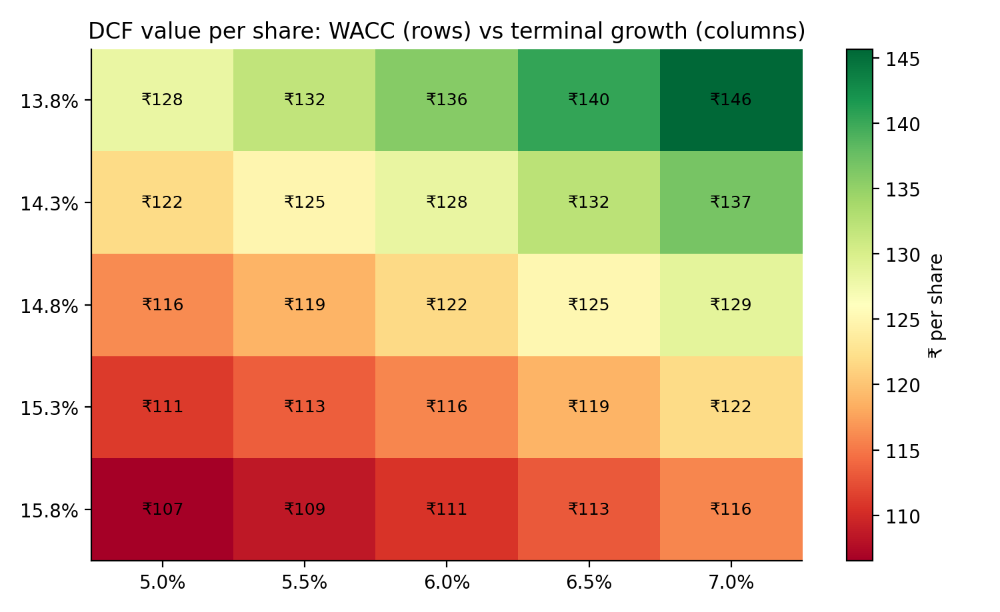
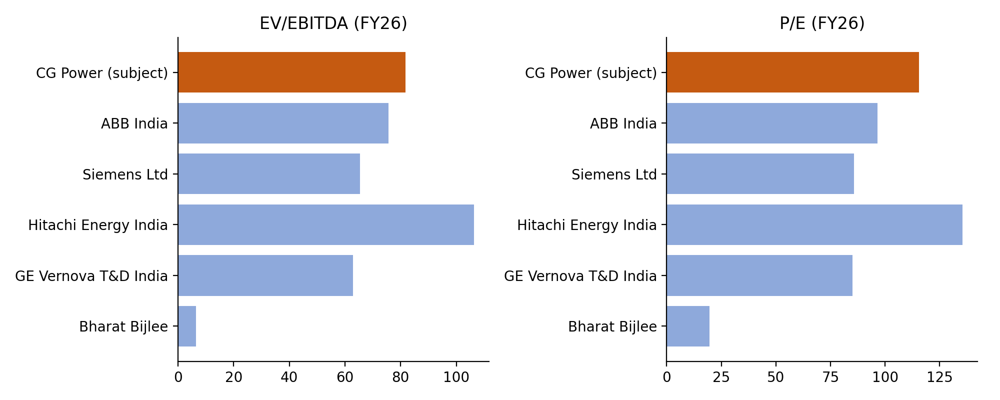
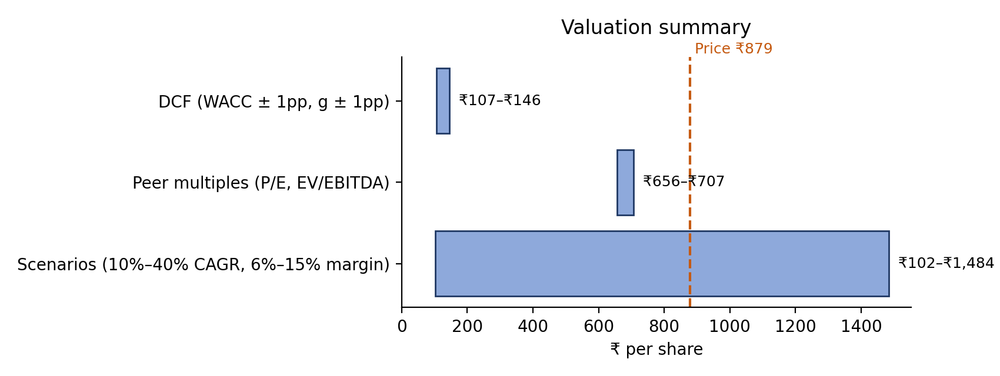
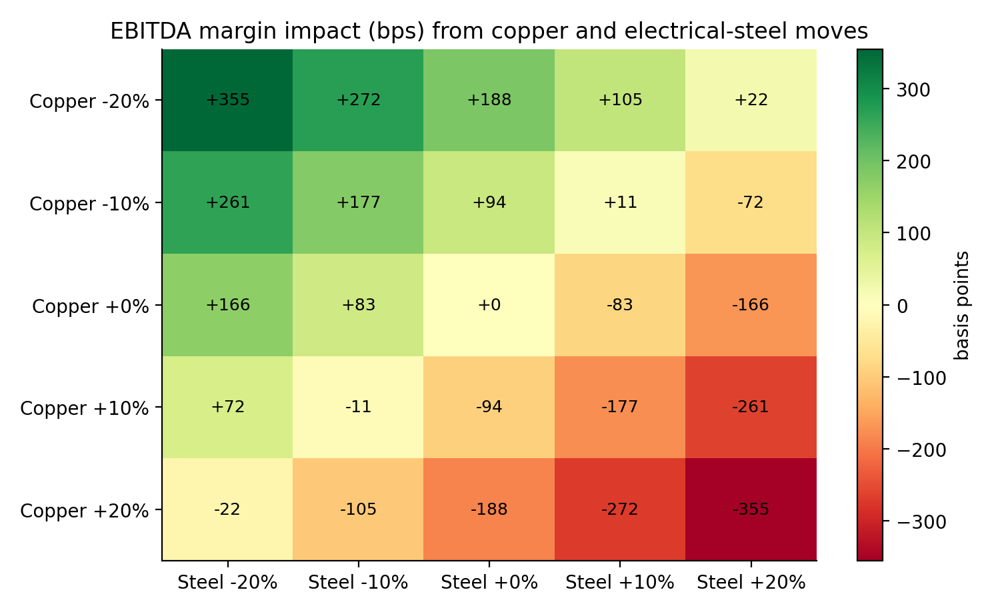

Independent equity research · Initiating coverageIndia · Capital goods / electrical equipment · 4 October 2026
Initiating coverage
CG Power and Industrial Solutions (NSE: CGPOWER)
The price needs 35% growth for a decade. Initiate at SELL, target price ₹402.
A good business at a price that assumes a perfect decade. CG Power is executing well. FY26 revenue grew 25% to ₹12,418 Cr, Power Systems (transformers and switchgear) grew 46% at a 22.6% EBITDA margin, and the order backlog rose 61% to ₹17,107 Cr. The question is what the share price already assumes. At ₹879 the stock trades at 115x FY26 earnings and 82x EV/EBITDA.
The reverse DCF. Discounted at our 14.8% WACC, ₹879 requires revenue to compound at about 35% a year for ten years while converting 12% of revenue into free cash flow. That puts FY36 revenue at about ₹2.5 lakh Cr, 20x FY26 and 5.7x the combined FY26 revenue of ABB India, Siemens, Hitachi Energy India and GE Vernova T&D India. A 12% free-cash-flow margin would also match CG's best year in the last five (12.4%, FY23); FY26 free cash flow was negative. The conclusion does not hinge on the discount rate: at an 11% WACC the price still needs 25% growth for a decade.
Cash conversion is moving the wrong way. Trade receivables rose 46% in FY26, against revenue growth of 25%, so operating cash flow covered only 43% of EBITDA. Capex rose to 6% of revenue, and the semiconductor business cost ₹111 Cr in FY26 and ₹43 Cr in Q1 FY27 alone. In Q1 FY27 revenue growth slowed to 14%, Industrial Systems grew only 6% and EBITDA margin fell to 12.1%.
Valuation. Our target price of ₹402 is a 50/50 blend of a 3-stage DCF (₹122) and peer multiples (₹682). The peer value assumes sector multiples of 65x EV/EBITDA and 86x P/E persist; even then CG is 22% overvalued, because it trades at a premium to an expensive peer group. Either method alone gives a SELL. The Street is more positive: consensus is Outperform with an average target of ₹934, and Kotak Institutional Equities (SELL, ₹630) is the main bear.
Commodity angle: raw materials are 69% of revenue. A 10% copper rise cuts EBITDA margin by about 94 bps (7% of FY27E EBITDA) at 50% pass-through.
Key financials (₹ Cr, March year-end, consolidated)
FY24A
FY25A
FY26A
FY27E
FY28E
FY29E
Revenue
8,046
9,909
12,418
14,733
17,383
20,160
Growth
15.4%
23.2%
25.3%
18.6%
18.0%
16.0%
EBITDA
1,142
1,320
1,641
1,915
2,434
2,923
EBITDA margin
14.2%
13.3%
13.2%
13.0%
14.0%
14.5%
Net profit
1,428*
973
1,199
1,427
1,779
2,108
EPS (₹)
9.34*
6.37
7.66
9.06
11.29
13.38
P/E at ₹879 (x)
94.1
138.0
114.8
97.0
77.8
65.7
Free cash flow†
805
491
−72
413
758
1,076
Source: company filings via Screener.in; estimates from the author's model. *FY24 includes large one-off other income (₹602 Cr exceptional items). †Historical: operating cash flow less capex; forecast: free cash flow to the firm (FCFF).
CG Power and Industrial Solutions · Initiating coverage4 October 2026
1. What ₹879 implies
A DCF answers "what is it worth?" with our assumptions. A reverse DCF asks the opposite: which assumptions make today's price fair? We hold revenue growth and free-cash-flow margin constant for ten years from the FY26 base (₹12,418 Cr), apply our 14.8% WACC and 6% terminal growth, and solve for the combinations that reach ₹879.
Value per share by 10-year revenue CAGR and FCFF margin. Bold cells are at or above ₹879. Source: author's model.
The required path is outside CG's own record
Growth: 35% a year for ten years is faster than any single year in FY23–FY26 (best: 27% in FY23). Revenue compounded at 23% a year over FY22–FY26.
Cash conversion: 12% FCFF margin needs to hold every year while revenue grows 35%. CG's best free-cash-flow margin in FY22–FY26 was 12.4% (FY23, when working capital was close to zero). FY26 was −0.6%.
Scale: FY36 revenue of about ₹2.5 lakh Cr would be 5.7x the combined FY26 revenue of the four large listed peers (₹44,669 Cr).
Trade-off: at a more plausible 20% CAGR, the price needs a 34% FCFF margin, nearly three times CG's best year.
The result holds at lower discount rates
WACC
CAGR needed at 12% margin
Margin needed at 25% CAGR
11.0%
25.0%
12.0%
12.5%
29.5%
16.5%
14.8% (base)
35.3%
24.1%
10-year steady growth and margin, then 6% terminal growth. Source: author's model.
Our WACC is high because the 10-year G-sec yield reached 7.21% on 1 Oct 2026 (a two-year high) and CG's measured beta is 1.26. A reader who prefers a lower WACC of 11–12.5% still faces a price that needs 25–30% growth for ten years. That is why we rate the stock SELL rather than HOLD.
Where we differ from the Street
View
Rating
Target
10-yr CAGR needed*
Consensus (20 analysts)
Outperform
₹934
36%
Kotak Institutional Equities
SELL
₹630
30%
This report
SELL
₹402
23%
Most analysts rate CG a buy; the average target is ₹934, 6% above the price. Kotak's ₹630 (27 Jul 2026, after a Q1 it called "a sharp miss") is close to our peer-multiple value of ₹682; our DCF is what puts us below every published target. Even the consensus target needs growth faster than CG's best year, for a decade.
*Revenue CAGR for ten years at a 12% FCFF margin, at our 14.8% WACC, that would justify each target. Sources: MarketScreener consensus, 1 Oct 2026; Kotak Securities PCG summary of KIE's Q1 FY27 update, 27 Jul 2026; author's model.
CG Power and Industrial Solutions · Initiating coverage4 October 2026
2. The business: two engines and a start-up
Power Systems (41% of FY26 revenue). Transformers, switchgear and related products for utilities, renewables and data centres. Revenue grew 46% to ₹5,138 Cr in FY26 and 31% in Q1 FY27; EBITDA margin rose to 22.6% (24.1% in Q1). The segment backlog was ₹14,434 Cr at 30 June 2026 (+59%), about 2.8x FY26 segment revenue. Transformer capacity rose from about 18,000 MVA to 65,000 MVA in a year, and a greenfield plant adds 25,000–30,000 MVA. In January 2026 CG won its largest-ever order, ₹900 Cr of power transformers for a US hyperscale data centre. Exports are still only about 5% of revenue.
Industrial Systems (54%). Motors, drives and railway equipment. Standalone segment revenue grew 6% to ₹6,197 Cr; motors grew double digits, half from price and half from volume. EBITDA margin fell from 12.8% to 10.6% on commodity costs and competitive railway pricing, even after motor price increases of 17.5% over three to four quarters. Q1 FY27 growth was 6% again, at a 9.6% margin after a ₹20 Cr railway provision. CG holds about 38–39% of the low-tension motor market.
Semiconductors (4%). An OSAT (assembly and test) business at Sanand, Gujarat. The G1 plant (0.5 million units a day) was inaugurated in August 2025 and began commercial production on 4 July 2026; G2 is due by the end of 2026 (14.5 million units a day). The ₹7,584 Cr project carries ₹4,901 Cr of central and state capital assistance. FY26 revenue was ₹503 Cr; the segment cost ₹111 Cr in FY26 and ₹43 Cr (132 bps of margin) in Q1 FY27 alone.
Revenue and EBITDA margin, FY22–FY31E. Source: Screener.in, author's model.
3. Cash conversion: the weak link
₹ Cr
FY22
FY23
FY24
FY25
FY26
EBITDA
647
1,006
1,142
1,320
1,641
Operating cash flow
483
947
1,028
916
702
Operating cash flow ÷ EBITDA
75%
94%
90%
69%
43%
Capex
70
82
223
425
774
Free cash flow
413
865
805
491
−72
Debtor days
63
68
70
74
86
Profit growth has not turned into cash. Receivables rose ₹912 Cr in FY26 as Power Systems, which sells on 90–100-day credit, became a larger share of revenue. Capex rose to 6% of revenue. Operating working capital rose from 16 to 24 days. (Screener's 70 days for FY26 counts ₹1,580 Cr of fixed deposits, mostly QIP money, as working capital; we exclude them.) Our forecast assumes conversion recovers: FCFF margin rises from 2.8% in FY27E to 6.5% in FY31E. That is well short of the 12% the price requires.
CG Power and Industrial Solutions · Initiating coverage4 October 2026
4. Forecasts: updated for Q1 FY27
We build revenue by segment, then derive margins, capex and working capital down to free cash flow. After the June 2026 quarter we cut Industrial Systems growth from 12% to 7–8% and the FY27E EBITDA margin from 13.5% to 13.0%. FY27E still assumes faster growth than Q1 delivered.
Driver
FY27E
FY28E
FY29E
FY30E
FY31E
Why
Power Systems growth
30%
25%
20%
18%
15%
Q1 FY27 +31%; backlog 2.8x segment revenue; fades as the cycle matures
Industrial Systems growth
7%
8%
8%
8%
8%
+6% in FY26 and Q1 FY27; motors double digit, railways flat (was 12%)
Semiconductor growth
60%
50%
40%
30%
25%
G1 commercial production from July 2026, G2 by end-2026; most uncertain line
EBITDA margin
13.0%
14.0%
14.5%
14.5%
14.5%
FY26 13.2%, Q1 FY27 12.1%; mix shift to Power Systems (was 13.5% in FY27E)
Q1 FY27 check. In the June 2026 quarter, consolidated revenue grew 14.0% to ₹3,281 Cr and EBITDA (excluding other income) rose 4.2% to ₹397 Cr, a 12.1% margin. Standalone Power Systems grew 31% at a 24.1% EBITDA margin; Industrial Systems grew 6% at 9.6%, after a ₹20 Cr railway provision. Our FY27E assumes 18.6% growth and a 13.0% margin, still above Q1. Kotak called the quarter a 10–15% miss on revenue and EBITDA.
5. Valuation: DCF
Cost of capital
Risk-free rate (10-yr G-sec, 1 Oct 2026)
7.21%
Beta (2-yr weekly vs Nifty 50, adjusted)
1.26
Equity risk premium
6.0%
Cost of equity
14.8%
Debt weight (lease liabilities only)
0.1%
WACC
14.8%
Terminal growth (after FY36)
6.0%
Raw beta 1.39 (standard error 0.23, R² 0.27), Blume-adjusted to 1.26 (0.67 × raw + 0.33).
DCF bridge
₹ Cr
PV of FCFF, FY27E–FY36E
7,042
PV of terminal value
7,928
Enterprise value
14,970
Add: net cash (incl. QIP deposits)
4,223
Equity value
19,193
Per share (157.6 Cr shares)
₹122
Terminal value share of EV
53%
Five explicit years, five years of growth fading linearly to 6% at the FY31E FCFF margin, then Gordon growth.
CG Power and Industrial Solutions · Initiating coverage4 October 2026

DCF value per share: WACC ±1pp vs terminal growth ±1pp. Range ₹107–146. Source: author's model.
The DCF is insensitive to reasonable changes in discount rate and terminal growth: every cell in the grid is below ₹150. The gap to ₹879 comes from cash flow, not discounting. Every year's FCFF would need to be about 9 times our forecast to justify the price on the same structure.
Net cash of ₹4,223 Cr is about ₹27 per share, 3% of the price. It includes ₹2,591 Cr of unspent QIP money in fixed deposits, which the FY26 annual report shows outside the cash line.
6. Valuation: peer multiples
Company
Price (₹)
Mkt cap (₹ Cr)
EV (₹ Cr)
EBITDA
Net profit
EV/EBITDA
P/E
Rev. growth
CG Power
879
1,38,486
1,34,263
1,641
1,199
81.8x
115.5x
25.3%
ABB India
6,900
1,46,217
1,39,024
1,836
1,514
75.7x
96.6x
6.1%
Siemens Ltd
3,804
1,35,468
1,30,162
1,992
1,581
65.3x
85.7x
11.8%
Hitachi Energy India
31,290
1,39,467
1,34,864
1,268
1,029
106.4x
135.5x
27.6%
GE Vernova T&D India
4,253
1,08,903
1,07,399
1,706
1,279
63.0x
85.1x
44.6%
Bharat Bijlee
2,070
2,339
1,053
163
120
6.5x
19.5x
19.6%
Peer median
65.3x
85.7x
FY26 = April 2025 to March 2026 for every company (ABB India and Siemens: sum of four quarters). Net profit excludes exceptional items, including ABB India's ₹1,442 Cr one-off gain. Net debt from the latest reported balance sheet. Prices are NSE closes on 1 Oct 2026. CG's P/E here is market cap ÷ net profit (115.5x); on EPS it is 114.8x. Source: Screener.in.

FY26 EV/EBITDA and P/E. Source: Screener.in, author's calculations.
At the peer median, CG is worth ₹656 on P/E and ₹707 on EV/EBITDA, ₹682 on average. CG grows faster than ABB India and Siemens but slower than GE Vernova T&D. Hitachi Energy, the closest match on growth, trades at the highest multiples. On the latest twelve months to June 2026, peer medians are 68x EV/EBITDA and 90x P/E, valuing CG at ₹733 (−17%).
We use the median because Bharat Bijlee, a small-cap motors company at 6.5x EV/EBITDA, would distort the mean. Peer multiples tell us what CG is worth if the whole sector stays at today's levels. They do not show that today's levels are justified, which is what the reverse DCF tests.
CG Power and Industrial Solutions · Initiating coverage4 October 2026
7. Target price and rating

Valuation ranges against the share price. Source: author's model.
Method
₹/share
Weight
DCF
122
50%
Peer multiples
682
50%
Target price
402
Downside from ₹879
−54%
Rating rule: BUY at 15% upside or more, SELL at 10% downside or more, HOLD otherwise. The blended target gives SELL. So do the DCF alone (−86%) and peer multiples alone (−22%, or −17% on trailing twelve months to June 2026), so the call does not depend on the weighting.
8. Commodity sensitivity

EBITDA margin impact (bps) of copper and electrical-steel price moves, after 50% pass-through within the year. Source: author's model.
Raw materials were 69% of FY26 revenue (materials consumed plus traded goods, less inventory build, from the annual report). Copper (27%) and electrical steel (24%) shares of material come from IEEMA's price-variation formulas, which index contract prices: copper 32 and CRGO 27 of 84 material points for power transformers; copper 26 and steel 27 of 82 for LT motors. We weight them by an estimated business mix (CG does not disclose sub-segments).
Copper +10%: −94 bps of EBITDA margin, −₹139 Cr or 7% of FY27E EBITDA.
Steel +10%: −83 bps. Both +10%: −177 bps.
Pass-through differs by business. Transformers and large projects carry price-variation clauses. Motors rely on list-price increases, which lag costs.
9. Risks to our SELL rating
Faster order conversion and exports. More data-centre and US grid orders could lift Power Systems growth above our 30% for FY27E. Exports are only about 5% of revenue, so the upside from a successful push is large.
Semiconductor success. With ₹4,901 Cr of government capital support, G2 could turn the semiconductor business profitable earlier and at larger scale than we model.
Margin expansion. Power Systems already earned 24.1% in Q1 FY27. If the mix shifts faster, group margins could pass our 14.5% ceiling.
Sector multiples stay high or expand. Our peer-based value assumes 65x EV/EBITDA persists. Sustained flows into Indian power-equipment stocks could keep the price far above fundamental value for a long time.
Lower interest rates. The 10-year yield is at a two-year high. A fall would raise the DCF value, though at an 11% WACC the price still needs 25% growth for a decade.
Risks that would strengthen the SELL case: receivables keep outgrowing revenue, so cash conversion stays below 50% of EBITDA; commodity inflation outpaces motor price increases, as in FY26; semiconductor losses last longer or need more capital.
CG Power and Industrial Solutions · Initiating coverage4 October 2026
Appendix A: what verification changed
Every placeholder was checked against a primary source before we set the rating, and the forecast was re-checked against the June 2026 quarter. These checks moved the answer:
Input
Placeholder
Verified
Source and effect
Cash and investments
₹3,000 Cr
₹4,341 Cr
FY26 annual report: ₹2,928 Cr of fixed deposits, ₹2,591 Cr of them QIP money, sit under "other financial assets", outside the cash line.
Working capital
70 days
24 days
Screener's figure counts ₹1,580 Cr of fixed deposits, mostly QIP money. Operating working capital from the annual report is 24 days. DCF value rose from ₹108 to ₹128.
Risk-free rate, beta
6.5%, 1.0
7.21%, 1.26
10-year G-sec on 1 Oct 2026; beta measured from two years of weekly returns. WACC rose from 12.5% to 14.8%.
Peer earnings
Blank
Aligned, one-offs excluded
ABB India's ₹1,442 Cr gain falls inside FY26 and is excluded. Reported trailing profits would have roughly halved ABB India's and Siemens' P/Es.
Industrial growth, FY27E margin
12%, 13.5%
7–8%, 13.0%
Segment grew 6% in FY26 and in Q1 FY27; Q1 margin 12.1%. DCF value fell from ₹128 to ₹122.
Copper, steel share of material
20%, 15%
27%, 24%
IEEMA price-variation weights × business mix. A 10% copper rise costs 94 bps of margin, not 69 bps.
The model is rebuilt independently in Python (cgpower_analysis.py): the DCF, the WACC × growth table, the reverse-DCF grid and the commodity grid all match Excel exactly.
Appendix B: methodology notes
Discounting: end-of-year cash flows from 31 March 2026. Rolling forward to the 1 October 2026 valuation date would raise the DCF value by about 6%, to roughly ₹129; this does not change the rating.
Minority interest: the DCF does not deduct ₹228 Cr of non-controlling interest (about ₹1.4 per share).
Peer cash: peer net debt uses Screener's cash and investments lines, which can miss deposits held elsewhere (as CG's did). Missed peer cash would lower peer EV/EBITDA by a few turns at most; P/E is unaffected.
Segments: Power Systems revenue is the company's standalone segment figure. Industrial Systems includes subsidiaries (₹6,747 Cr consolidated vs ₹6,197 Cr standalone). A ₹30 Cr balancing item is held flat.
Auditor change: S.R. Batliboi & Associates said it would resign as statutory auditor from 14 August 2026 so that CG uses the same audit network as its parent, Tube Investments of India, whose auditor rotates out after ten years (Q1 FY27 press release). We read it as group alignment, not an accounting signal.
Sources
CG Power FY26 annual report (BSE filing): consolidated balance sheet, cash flow statement, notes 7, 11, 13–15 and 56.
CG Power Q4 FY26 press release and earnings call transcript, 6 May 2026; Q1 FY27 press release, 24 July 2026.
IEEMA price-variation circulars: power and distribution transformers (Nos. 140 and 142, November 2021); AC/DC rotating machinery (No. 33, November 2022).
MarketScreener analyst consensus, 1 October 2026; Kotak Securities PCG summary of Kotak Institutional Equities' Q1 FY27 update, 27 July 2026.
Screener.in (C-MOTS data): CG Power and peer financials, quarterly results and price history, accessed 30 Sep and 4 Oct 2026.
Yahoo Finance weekly adjusted closes, CGPOWER.NS and ^NSEI, Oct 2024 to Sep 2026 (beta); Trading Economics, India 10-year bond yield, 1 Oct 2026.